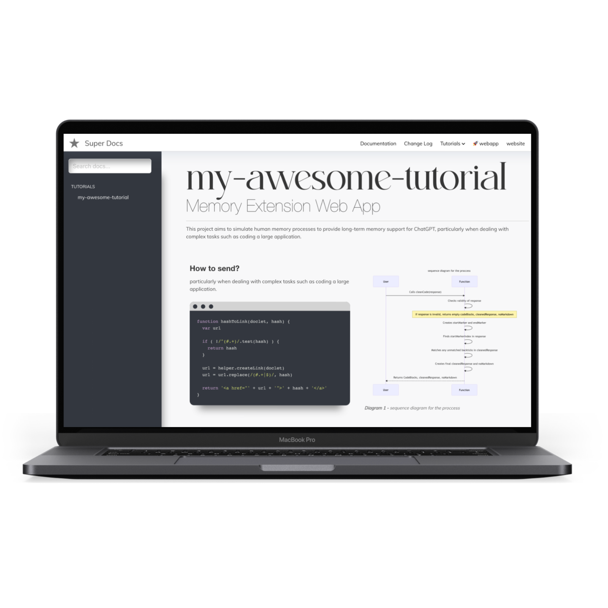

Super Docs theme for JsDocs
Documentation toolbox for your javascript / typescript projects based on JSDoc3 with @category, @component and @optional plugins.
This how it looks:

Example
Example documentation can be found here: https://softwarebrothers.github.io/example-design-system/index.html
OpenSource sherifButt community
- Join the community to get help and be inspired.
- subscribe to our newsletter
Installation
npm install --save-dev super-docs
Theme Usage
With command line
Assuming that you have jsdoc installed globally:
jsdoc your-documented-file.js -t ./node_modules/super-docs
With npm and configuration file
In your projects package.json file - add a new script:
"script": {
"docs": "jsdoc -c jsdoc.json"
}
in your jsdoc.json file, set the template:
"opts": {
"template": "node_modules/super-docs"
}
TypeScript support
super-docs has a plugin which allows you to generate documentation from your TypeScript codebase.
Usage
To use it update your jsdoc.json file
...
"tags": {
"allowUnknownTags": ["optional"] //or true
},
"plugins": [
"node_modules/super-docs/typescript"
],
"source": {
"includePattern": "\\.(jsx|js|ts|tsx)$",
},
...
And now you can run your jsdoc command and parse TypeScript files.
How it works?
It performs 4 operations:
- First of all it transpiles all .ts and .tsx files to .js, so that all comments used by you are treated as a regular JSDoc comments.
Furthermore it:
- Converts all your commented
typealiases to@typedef - Converts all your commented
interfacedefinitions to@interface, - Converts descriptions for your public, protected, static class members
so they can be printed by JSDoc automatically.
Examples
/**
* ActionRequest
* @memberof Action
* @alias ActionRequest
*/
export type ActionRequest = {
/**
* parameters passed in an URL
*/
params: {
/**
* Id of current resource
*/
resourceId: string;
/**
* Id of current record
*/
recordId?: string;
/**
* Name of an action
*/
action: string;
[key: string]: any;
};
}
is converted to:
/**
* ActionRequest'
* @memberof Action'
* @alias ActionRequest'
* @typedef {object} ActionRequest'
* @property {object} params parameters passed in an URL'
* @property {string} params.resourceId Id of current resource'
* @property {string} [params.recordId] Id of current record'
* @property {string} params.action Name of an action'
* @property {any} params.{...}'
*/
Also you can comment the interface in a similar fashion:
/**
* JSON representation of an Action
* @see Action
*/
export default interface ActionJSON {
/**
* Unique action name
*/
name: string;
/**
* Type of an action
*/
actionType: 'record' | 'resource' | Array<'record' | 'resource'>;
/**
* Action icon
*/
icon?: string;
/**
* Action label - visible on the frontend
*/
label: string;
/**
* Guarding message
*/
guard?: string;
/**
* If action should have a filter (for resource actions)
*/
showFilter: boolean;
/**
* Action component. When set to false action will be invoked immediately after clicking it,
* to put in another words: there wont be an action view
*/
component?: string | false | null;
}
or describe your class properties like that:
/**
* Class name
*/
class ClassName {
/**
* Some private member which WONT be in jsdoc (because it is private)
*/
private name: string
/**
* Some protected member which will go to the docs
*/
protected somethingIsA: number
/**
* And static member which will goes to the docs.
*/
static someStaticMember: number
public notCommentedWontBeInJSDoc: string
constructor(color: string) {}
}
@category plugin
super-docs also allows you to nest your documentation into categories and subcategories in the sidebar menu.
Usage
To add a plugin - update plugins section in your jsdoc.json file:
...
"tags": {
"allowUnknownTags": ["category"] //or true
},
"plugins": [
"node_modules/super-docs/category"
],
...
and then you can use @category and/or @subcategory tag in your code:
/**
* Class description
* @category Category
* @subcategory All
*/
class YourClass {
....
}
@component plugin [BETA]
Super-docs also allows you to document your React and Vue components automatically. The only thing you have to do is to add a @component tag. It will take all props from your components and along with an @example tag - will generate a live preview.
Installation instructions
Similar as before to add a plugin - you have to update the plugins section in your jsdoc.json file:
...
"tags": {
"allowUnknownTags": ["component"] //or true
},
"plugins": [
"node_modules/super-docs/component"
],
...
Since component plugin uses parcel as a bundler you have to install it globally. To do this run:
## if you use npm
npm install -g parcel-bundler
## or yarn
yarn global add parcel-bundler
Usage
To document components simply add @component in your JSDoc documentation:
/**
* Some documented component
*
* @component
*/
const Documented = (props) => {
const { text } = props
return (
<div>{text}</div>
)
}
Documented.propTypes = {
/**
* Text is a text
*/
text: PropTypes.string.isRequired,
}
export default Documented
The plugin will take the information from your PropTypes and put them into an array.
For Vue it looks similar:
<script>
/**
* @component
*/
export default {
name: 'ExampleComponent',
props: {
spent: {
type: Number,
default: 30,
},
remaining: {
type: Number,
default: 40,
}
},
}
</script>
In this case, props will be taken from props property.
Preview
@component plugin also modifies the behaviour of @example tag in a way that it can generate an actual component preview. What you have to do is to add an @example tag and return component from it:
React example:
/**
* Some documented component
*
* @component
* @example
* const text = 'some example text'
* return (
* <Documented text={text} />
* )
*/
const Documented = (props) => {
///...
}
Vue example 1:
<script>
/**
* @component
* @example
* <ExampleComponent :spent="100" :remaining="50"></ExampleComponent>
*/
export default {
name: 'ExampleComponent',
//...
}
</script>
Vue example 2:
<script>
/**
* @component
* @example
* {
* template: `<Box>
* <ProgressBar :spent="spent" :remaining="50"></ProgressBar>
* <ProgressBar :spent="50" :remaining="50" style="margin-top: 20px"></ProgressBar>
* </Box>`,
* data: function() {
* return {spent: 223};
* }
* }
*/
export default {
name: 'ExampleComponent',
//...
}
</script>
You can put as many @example tags as you like in one component and "caption" each of them like this:
/**
* @component
* @example <caption>Example usage of method1.</caption>
* // your example here
*/
Mixing components in preview
Also you can use multiple components which are documented with @component tag together. So lets say you have 2 components and in the second component you want to use the first one as a wrapper like this:
// component-1.js
/**
* Component 1
* @component
*
*/
const Component1 = (props) => {...}
// component-2.js
/**
* Component 2
* @component
* @example
* return (
* <Component1>
* <Component2 prop1={'some value'}/>
* <Component2 prop1={'some other value'}/>
* </Component1>
* )
*/
const Component2 = (props) => {...}
Wrapper component [only React]
Most probably your components will have to be run within a particular context, like within redux store provider or with custom CSS libraries.
You can simulate this by passing a component.wrapper in your jsdoc.json:
(To read more about passing options - scroll down to Customization section)
// jsdoc.json
{
"opts": {...},
"templates": {
"super-docs": {
"name": "Sample Documentation",
"component": {
"wrapper": "./path/to/your/wrapper-component.js",
},
"...": "...",
}
}
}
Wrapper component can look like this:
// wrapper-component.js
import React from 'react'
import { BrowserRouter } from 'react-router-dom'
import { createStore } from 'redux'
import { Provider } from 'react-redux'
const store = createStore(() => ({}), {})
const Component = (props) => {
return (
<React.Fragment>
<head>
<link type="text/css" rel="stylesheet" href="https://cdnjs.cloudflare.com/ajax/libs/bulma/0.7.5/css/bulma.css" />
</head>
<Provider store={store}>
<BrowserRouter>
{props.children}
</BrowserRouter>
</Provider>
</React.Fragment>
)
}
export default Component
Styling React examples
Super-docs inserts all examples within an iframe. This results in the following styling options:
-
If you pass styles inline - they will work right away.
-
For
css modulesto work withparcelbundler - you have to installpostcss-modulespackage:
yarn add postcss-modules
and create a .postcssrc file:
// .postcssrc
{
"modules": true
}
- For styled-components you have to use wrapper component which looks like this:
import React from 'react'
import { StyleSheetManager } from 'styled-components'
const Component = (props) => {
const { frameContext } = props
return (
<StyleSheetManager target={frameContext.document.head}>
{props.children}
</StyleSheetManager>
)
}
export default Component
Adding commands to bundle entry file
@component plugin creates an entry file: .entry.js in your docs output folder. Sometimes you might want to add something to it. You can do this by passing: component.entry option, which is an array of strings.
So let's say you want to add babel-polyfill and 'bulma.css' framework to your bundle. You can do it like this:
// jsdoc.json
{
"opts": {...},
"templates": {
"super-docs": {
"name": "Sample Documentation",
"component": {
"entry": [
"import 'babel-polyfill';",
"import 'bulma/css/bulma.css';"
]
},
"...": "...",
}
}
}
Customization
First of all, let me state that super-docs extends the default template. That is why default template parameters are also handled.
[BETA]: You must explicitly set the search option of the default template to true to enable search
To customize the super-docs pass options to templates['super-docs']. section in your jsdoc configuration file.
Example configuration file with settings for both default and super-docs templates:
{
"tags": {
"allowUnknownTags": ["category"]
},
"source": {
"include": ["./src"],
"includePattern": ".js$",
"excludePattern": "(node_modules/|docs)"
},
"plugins": [
"plugins/markdown",
"jsdoc-mermaid",
"node_modules/super-docs/category"
],
"opts": {
"encoding": "utf8",
"destination": "docs/",
"readme": "readme.md",
"recurse": true,
"verbose": true,
"tutorials": "./docs-src/tutorials",
"template": "super-docs"
},
"templates": {
"cleverLinks": false,
"monospaceLinks": false,
"search": true,
"default": {
"staticFiles": {
"include": [
"./docs-src/statics"
]
}
},
"super-docs": {
"name": "Sample Documentation",
"logo": "images/logo.png",
"title": "", // HTML title
"css": "style.css",
"trackingCode": "tracking-code-which-will-go-to-the-HEAD",
"hideGenerator": false,
"navLinks": [
{
"label": "Github",
"href": "https://github.com/sherifButt/admin-bro"
},
{
"label": "Example Application",
"href": "https://admin-bro-example-app-staging.herokuapp.com/admin"
}
]
}
}
}
Extras
typedef(import(...))
super-docs also has one extra plugin for handling typescript'like types imports like (it has to be one-liner):
/** @typedef {import('./some-other-file').ExportedType} ExportedType */
It simply removes that from the code so JSDoc wont throw an error. In order to use it add this plugin to your plugins section:
"plugins": [
"node_modules/super-docs/typedef-import"
],
Setting up for the development
If you want to change the theme locally follow the steps:
- Clone the repo to the folder where you have the project:
cd your-project
git clone git@github.com:sherifButt/super-docs.git
or add it as a git submodule:
git submodule add git@github.com:sherifButt/super-docs.git
- Install the packages
cd super-docs
npm install
## or
yarn
- Within the super-docs folder run the gulp script. It will regenerate documentation every time you change something.
It supports following EVN variables:
DOCS_COMMAND- a command in your root repo which you use to generate documentation: i.e.DOCS_COMMAND='jsdoc -c jsdoc.json'ornpm run docsif you havedocscommand defined inpackage.jsonfileDOCS_OUTPUT- where your documentation is generated. It should point to the same folder your jsdoc--destinationconf. But make sure that it is relative to the path where you clonedsuper-docs.DOCS- list of folders from your original repo what you want to watch for changes. Separated by comma.
cd super-docs
DOCS_COMMAND='npm run docs' DOCS=../src/**/*,../config/**/* DOCS_OUTPUT=../docs cd super-docs && gulp
The script should launch the browser and refresh it whenever you change something in the template or in DOCS.
Setting up the jsdoc in your project
If you want to see how to setup jsdoc in your project - take a look at these brief tutorials:
- JSDoc - https://www.youtube.com/watch?v=Yl6WARA3IhQ
- super-docs and Mermaid: https://www.youtube.com/watch?v=UBMYogTzsBk
License
super-docs is Copyright © 2019 sherifButt.co. It is free software and may be redistributed under the terms specified in the LICENSE file - MIT.
About sherifButt.co
We're an open, friendly team that helps clients from all over the world to transform their businesses and create astonishing products.
- We are available for hire.
- If you want to work for us - check out the career page.